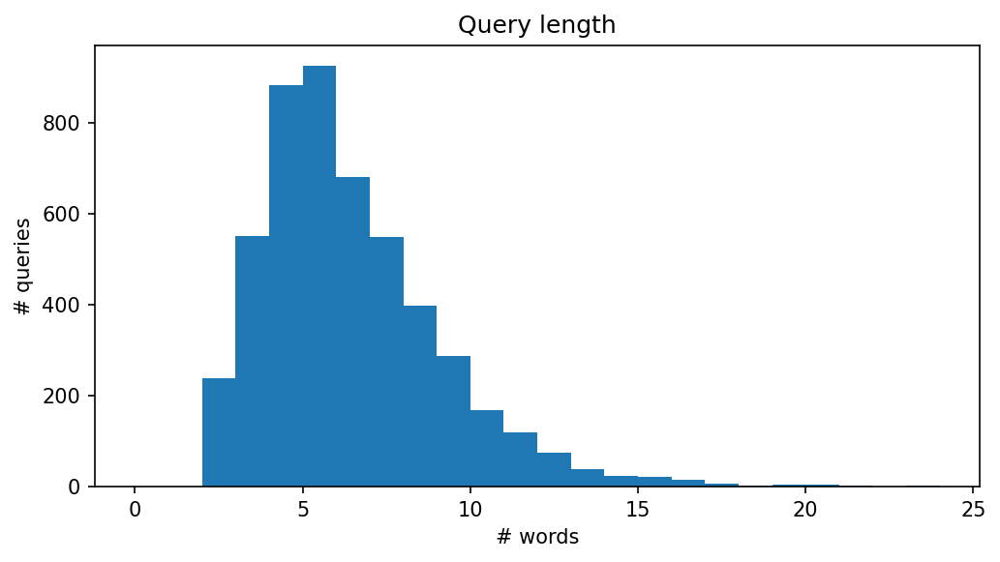
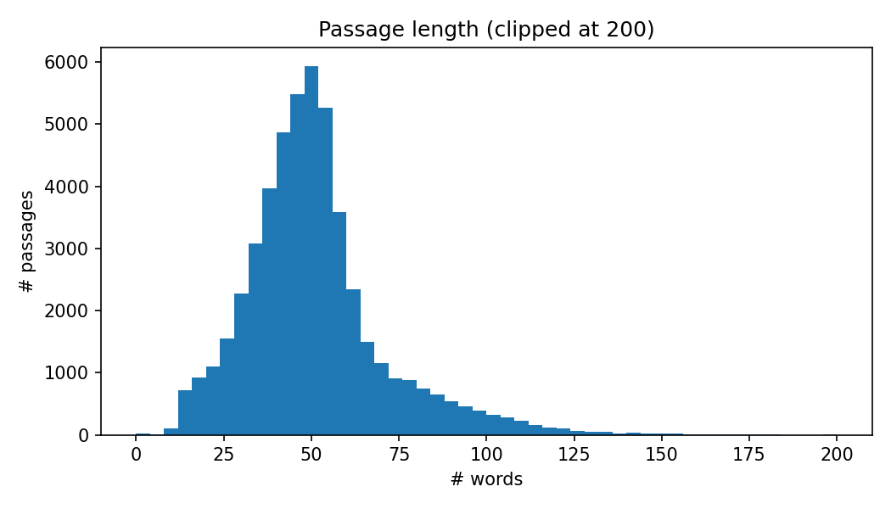
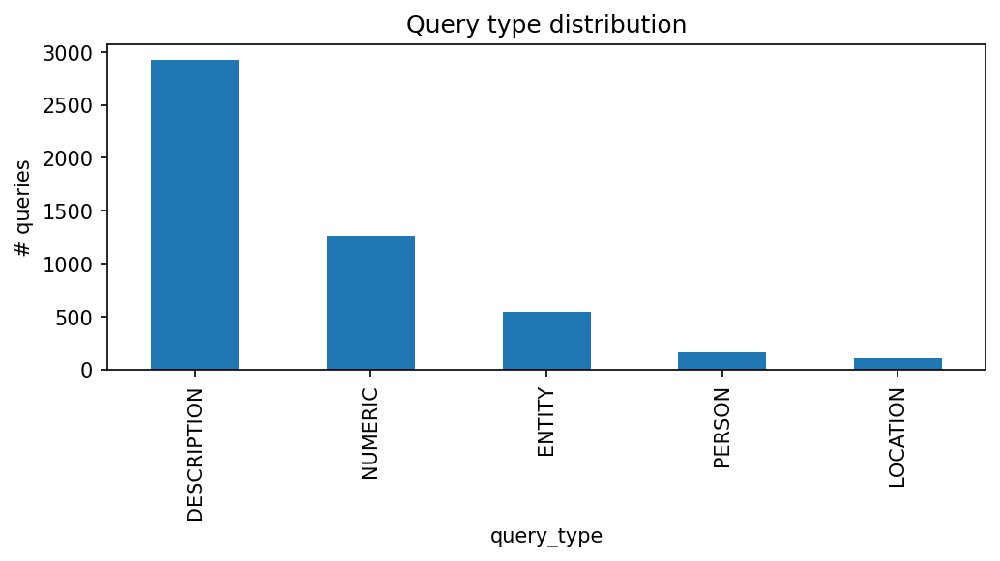
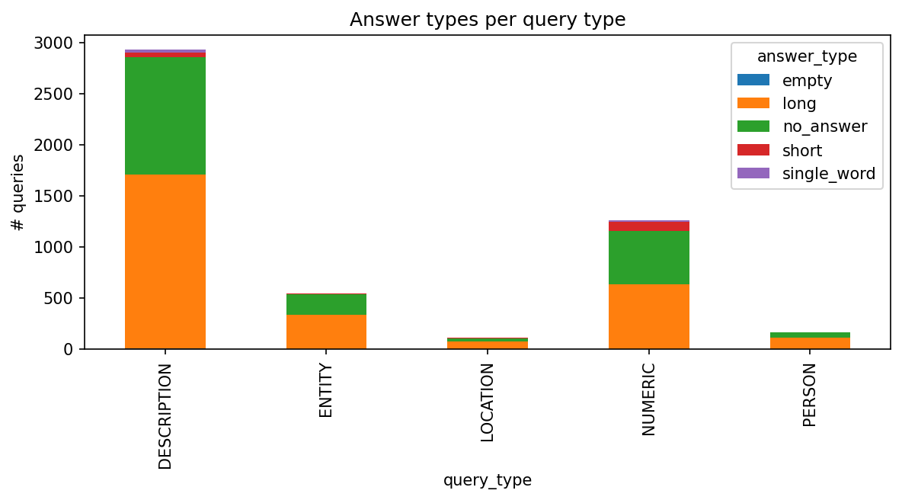
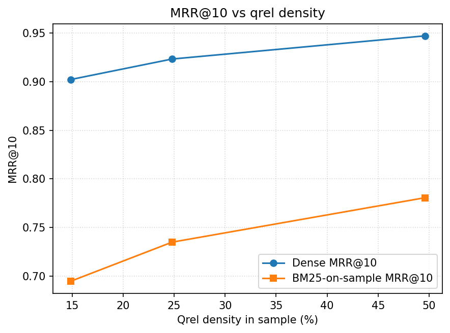
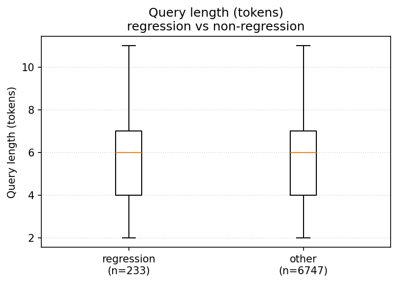
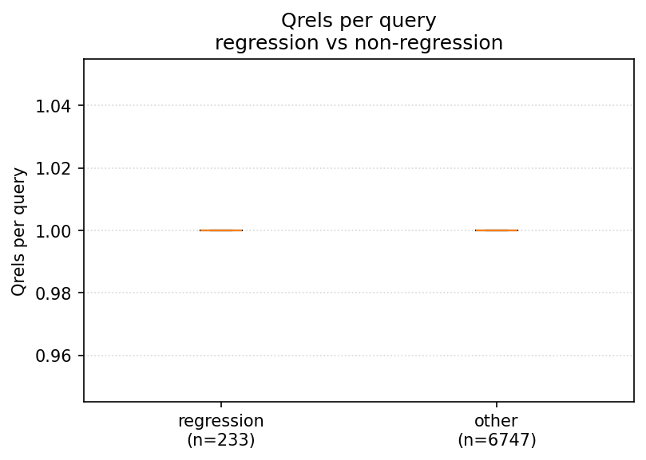
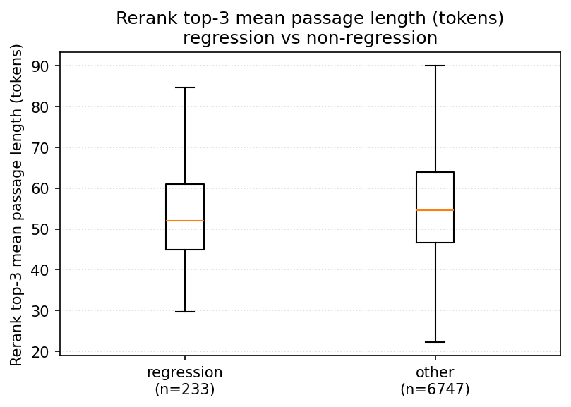

MS MARCO Generative QA
A Reproducible Retrieve–Rerank–Generate Pipeline
with Grounding and Triad Audits
Repository report — updated 2026-06-27
Gioia Zheng
| Experiment period | 2026-03-06 – 2026-05-21 |
| Current update | 2026-06-27 |
| Scope | Batch evaluation, CPU-only; English passage retrieval + QA |
Project repository
github.com/GioiaZheng/msmarco-genqa
This report documents a research-engineering project that reproduces
and analyses a complete retrieve–rerank–generate
question-answering pipeline on the MS MARCO Passage Ranking
benchmark (Bajaj et al. 2016;
Nguyen et al. 2016). Each stage is implemented from open-source
components on a single laptop, with no GPU, no fine-tuning, and no
proprietary services: BM25 first-stage retrieval (Robertson and Zaragoza 2009;
Lù 2024) over the 8.8 million-passage corpus; a dense
Sentence-Transformers baseline with FAISS exact
search (Reimers and Gurevych
2019; Johnson et al. 2019) on a qrels-anchored 50k sample; a
cross-encoder reranker (Nogueira and Cho 2019;
Wang et al. 2020) over the top-100 candidates; and a frozen
T5-small (Raffel et al.
2020) acting as a retrieval-augmented generator (Lewis et al. 2020) on
the top-3 retrieved passages.
The single load-bearing empirical result is a paired comparison on
all 6 980 dev/small queries: replacing BM25 with the
cross-encoder-reranked dense top-3 as the upstream passage source —
without touching the generator — approximately doubles every
surface-form generation metric (Token-F1 0.197 → 0.368, ROUGE-L 0.193 → 0.368), with 95 % paired-bootstrap
confidence intervals (Koehn 2004) strictly above zero
on all four metrics. A DistilBERT-based BERTScore proxy (Zhang et al. 2020;
Sanh et al. 2019) on a 3 000-pair subsample recovers the same
paired Δ (+0.173), ruling out a surface-form artefact.
A targeted decoding-budget sweep (max_new_tokens = 64 → 128) and a
40-query regression failure taxonomy together falsify the
hypothesis that generator truncation drives the residual regression
bucket: the generator is hitting end-of-sequence naturally on this
prompt format.
A subsequent grounding audit calibrates the headline result. Lexical
content-token grounding (0.997) and
3-gram grounding (0.99) sit at the
ceiling on both arms, showing that T5-small under the
question: … context: … prompt is performing
extractive rather than truly generative QA: the rerank gain is
almost entirely downstream of retrieval. An NLI-entailment grounding
proxy (He et al. 2023; Williams
et al. 2018) produces the only paired metric in the project whose
sign reverses (Δ = − 0.145,
95 % CI [−0.160, −0.130]), most likely
as an artefact of fragmentary midword-cut outputs that defeat
sentence-level NLI rather than as a true semantic regression.
The report covers, in order: the dataset characterisation, the four modelling stages, post-hoc evaluation layers (semantic proxy, grounding, and the current triad diagnostic interface), an honest comparison between the initial 12-stage project plan and what actually shipped, and the engineering scaffolding (reproducibility manifests, paired-bootstrap confidence intervals, deterministic seeds) that lets every number in this document be regenerated from one command per stage.
This 2026-06-27 update keeps the empirical claims anchored to the
original experiment outputs while bringing the repository description up
to date. Since the experiment window closed, the project has gained an
installable CLI surface, the rag-eval workflow facade,
optional model-stack smoke validation, local experiment tracking, a
lightweight serving wrapper, refreshed CI, secret scanning, a
deterministic RAG triad CLI, stricter input-validation boundaries for
run files / JSONL / serving calls, and a clearer advanced-RAG
roadmap.
Keywords. MS MARCO; passage retrieval; BM25; dense retrieval; cross-encoder reranking; retrieval-augmented generation; BERTScore; NLI grounding; RAG triad; paired bootstrap; extractive QA.
The project brief was to build a complete retrieve–generate question-answering pipeline on the MS MARCO corpus, exploring how each stage of the pipeline contributes to end-to-end answer quality (Bajaj et al. 2016; Lewis et al. 2020). MS MARCO is a natural target dataset for this exercise: its queries originate from real Bing user traffic, its relevance judgements are human-annotated, and its v2.1 Q&A flavour ships human-written answers that allow surface-form generation evaluation (Nguyen et al. 2016).
The brief named twelve planned milestones spanning EDA, sparse retrieval, generation baselines, dense retrieval, reranking, generator fine-tuning, hallucination mitigation, long-document processing, system integration and acceleration, and a final write-up. In practice the project ran through eleven milestones on a single-user, CPU-only Apple Silicon laptop, with no fine-tuning at any stage. 6.3 compares the plan to the actual deliverables and explains the deviations.
Three principles shaped every decision the project made:
Honest baselines before optimisation. Every stage produces a numerically reproducible baseline — BM25 MRR, generation Token-F1 on a fixed query set, reranking ΔMRR@10 versus a precisely identified first stage — before any tuning is considered. The 200-query subsample baselines are clearly labelled as such; the load-bearing claims are restricted to the full 6 980 dev/small numbers.
Paired statistical tests on every comparison. When the question is “did X help on top of Y?” the report always answers it on the same query ids, with a paired bootstrap (Koehn 2004) reporting a 95 % confidence interval on the per-query Δ, not just a point estimate. When the sample is too small for that — e.g. the 200-query smoke-test scale — the report says so and labels the number as illustrative.
Calibrate metrics before celebrating them. Surface- form metrics (ROUGE-L, BLEU, EM, Token-F1) under-credit valid paraphrases (Lin 2004; Papineni et al. 2002); a BERTScore semantic proxy (Zhang et al. 2020) and a grounding audit (5.9) check whether the headline gain is real, an artefact of overlap, or a side-effect of the generator’s output shape. Two of the three checks confirm the gain; one (the NLI proxy of 5.9.2) flips sign, and the report devotes 6.2 to that disagreement rather than burying it.
This report contributes the following:
A single-machine, CPU-only reproduction of the standard MS MARCO Passage retrieval → reranking → RAG-generation pipeline, with the BM25 first-stage MRR@10 within ∼ 0.014 of the published Anserini/Lucene reference baseline (Lin et al. 2021) on the same data (4.1).
A paired full-dev comparison of generation quality under BM25 versus cross-encoder-reranked retrieval (5.6), with 95 % paired-bootstrap confidence intervals strictly above zero on all four surface-form metrics and a BERTScore proxy that recovers the same Δ.
A two-step falsification of the most plausible
explanation for the residual regression bucket (5.8.3): the decoding-budget closure
run and the grounding-ceiling reading together rule out
max_new_tokens as the bottleneck.
A grounding audit (5.9) that calibrates the rerank gain as a retrieval gain almost entirely downstream of passage selection, and isolates a sign-reversing NLI anomaly (5.9.2) most plausibly attributable to fragmentary outputs rather than true semantic drift.
A reproducibility scaffold (per-run manifests with git commit, dependency hashes, command line, and per-output SHA-256s; deterministic seeds throughout; a single config file driving all four runners) sufficient to re-derive every number in this report from one command per stage on a comparable single-machine setup.
A maintained repository surface around the experiments:
installable console entry points, the rag-eval workflow
facade, optional model-stack smoke validation, local experiment
tracking, a lightweight mgq-serve FastAPI wrapper, CI,
secret scanning, and separate reproducibility/security notes.
2 surveys the related work that anchors the design choices. 3 characterises the MS MARCO subset actually used. 4 steps through the four modelling stages in implementation order. 5 is the central empirical chapter, presenting the retrieval numbers, the load-bearing paired generation comparison, the first-stage head-to-head, the evaluation layer, the grounding audit, and the triad diagnostic interface. 6 discusses what the combination of evaluation-layer closure, grounding, and triad diagnostics actually means about where the gain comes from, treats the NLI sign flip on its own terms, and compares ship versus plan. 7 states the limitations. 8 concludes. The question-form breakdown is reported inline with the rest of the evaluation layer (11). Appendices cover the configuration and reproducibility scaffolding (9), the full five-way bucket counts (10), and a short glossary of cross-references (11).
The project has moved from a report-centred experiment bundle to a small research-engineering repository. The headline metrics in this document remain historical experiment results, but the codebase now has a clearer operating surface:
Workflow facade.
rag-eval run --config configs/baseline.yaml builds or
dry-runs the configured retrieval, reranking, generation,
context-packing, bootstrap, grounding, and triad-evaluation workflow
from one entry point.
Package and CLI surface. The project installs
via pip install -e . and exposes stage-level
mgq-* commands plus mgq-serve for local
serving experiments. The current evaluation surface includes
mgq-retrieval-report matrix for same-qid BM25 / dense / RRF
/ reranked comparison tables and mgq-trec-eval for an
independent TREC-compatible metric cross-check, plus
mgq-context-packing-report for packed-vs-plain generation
prompt comparisons, plus mgq-rag-triad for
context-relevance, groundedness, and answer-relevance diagnostics over
existing generation outputs.
Validation. Default CI runs fast pytest
coverage, ruff, headline-metric metadata checks, and a
high-confidence secret scan. Heavy model and data checks stay opt-in
through the model-stack smoke and slow/integration test markers. A
committed two-query TREC fixture validates run and qrels parsing,
canonical export, metric scope, and agreement with the optional
ir-measures backend without fetching the full
corpus.
Reproducibility. The manifest contract now records command lines, dependency-file hashes, config hashes, git state, output hashes, and cache/profile metadata. The documentation separates quick local checks from heavyweight data/model reproduction.
Research backlog. Follow-up issues now separate learned sparse retrieval, stronger rerankers, chunking protocols, query transformation, offline/online indexing, citation-aware generation, and adaptive retrieval sufficiency checks.
MS MARCO is among the largest publicly available collections of real-user search queries with human-judged relevance and human-written answers (Bajaj et al. 2016; Nguyen et al. 2016). Its Passage Ranking corpus contains 8.8M passages with one or two relevance judgements per dev query; the Q&A v2.1 split layered on top supplies free-form answers that make end-to-end generation tractable to evaluate. The benchmark has been the de-facto target for mid-2010s-to-2020s information retrieval research; published BM25 baselines in the Anserini/Lucene/Pyserini (Lin et al. 2021) stack report MRR@10 ≈ 0.184 on dev/small. This project’s BM25 number (MRR@10 = 0.170, 4.1) is within tokenizer-induced distance of that reference.
BM25 remains the canonical sparse first-stage retriever (Robertson and Zaragoza
2009). This project uses bm25s (Lù 2024), a
pure-Python re-implementation of the BM25 scoring formula with eager
sparse scoring that achieves Lucene-comparable throughput on commodity
CPUs without requiring a JVM; the trade-off is a different default
tokenizer, which is the main attributable source of the ∼ 0.014 MRR gap relative to the
Lucene-tokenizer reference baseline.
Sentence-level dense retrievers (Reimers and Gurevych 2019) encode
queries and passages into a shared embedding space. ANCE (Xiong et al. 2021)
and subsequent MS MARCO-tuned encoders established that dense retrieval
can substantially outperform BM25 on this benchmark. This project uses a
generic (non-domain-tuned) all-MiniLM-L6-v2 (Wang et al. 2020)
encoder as the dense baseline, deliberately leaving the MS MARCO-tuned
variant (msmarco-MiniLM-L6-cos-v5) and a stronger generic
encoder (BGE small (Xiao
et al. 2024)) for the same-tier encoder comparison. Exact
similarity search is via FAISS IndexFlatIP (Johnson et al.
2019) on L2-normalised embeddings (cosine similarity); no
approximate nearest-neighbour index is used, since the 50k-passage
sampled setting fits in memory.
Cross-encoders applied to (query, passage) pairs and trained on
relevance labels — the architecture introduced by Nogueira and Cho (Nogueira and Cho
2019) — give the highest known single-stage reranking quality on
MS MARCO. The reranker used throughout this project is
cross-encoder/ms-marco-MiniLM-L-6-v2, a small distilled
cross-encoder (Wang
et al. 2020) trained on MS MARCO qrels. Reranking depth is fixed
to K = 100 throughout the
report; the K-sweep ({50, 100, 200}) is queued as the top-k sweep (6.3).
RAG (Lewis et al.
2020) folds retrieved passages into the prompt of an
encoder–decoder language model. This project’s RAG generator is the
smallest T5 (Raffel et
al. 2020) checkpoint (t5-small), used as a frozen
pretrained model with the canonical T5 extractive-QA prompt shape
(question: <q> context: <p1> <p2> <p3>;
see 4.2 for the verbatim form). The choice of
T5-small is deliberate: it caps the absolute generation quality but lets
the entire pipeline run end-to-end on CPU within a few hours per
full-dev sweep, which is what makes the paired statistical comparisons
of 5.6 possible at all.
Surface-form metrics — ROUGE-L (Lin 2004) and BLEU (Papineni et al.
2002) — under-credit valid paraphrases. BERTScore (Zhang et al.
2020) replaces n-gram overlap with contextualised-embedding
cosine similarity at the token level. This project uses BERTScore with a
DistilBERT (Sanh
et al. 2019) backbone as a semantic proxy (deliberately
not the canonical roberta-large citation-grade scorer),
reserving the heavier encoder for a follow-up. The grounding audit of 5.9 borrows from the faithfulness-evaluation
literature on natural language generation (Ji et al. 2023;
Honovich et al. 2022), specifically the practice of using a small
NLI cross-encoder (He et al. 2023; Williams
et al. 2018) to score entailment(passages → prediction).
Every paired comparison in this report uses Koehn’s paired bootstrap (Koehn 2004) (10 000 resamples, seed 42, percentile interval); structural feature comparisons between regression and non-regression queries use Mann–Whitney U with rank-biserial effect size (Mann and Whitney 1947). This is deliberate: with sample sizes in the thousands but per-query metrics that are highly non-normal (bimodal at 0/1 for exact-match, heavy-tailed for BLEU on short outputs), only resampling-based intervals are credible.
The project consumes two distinct slices of MS MARCO:
MS MARCO Passage Ranking (the retrieval corpus):
8.8M English passages, ∼ 400 bytes
median length. All retrieval baselines (BM25, dense, rerank, and the
generator’s upstream context) index this corpus. Used the official
ir_datasets loader (MacAvaney et al. 2021) for
both the corpus and the dev/small relevance
judgements.
MS MARCO Q&A v2.1 validation split: ∼ 101k queries, each with up to ten candidate passages and one or more human-written reference answers. The EDA uses the first 5 000 rows of this split; the generation evaluation uses the references attached to the 6 980 dev/small queries on which BM25 and the reranker both produce a top-3 (5.6).
[fig:query-length,fig:passage-length] report the empirical length distributions on the EDA 5 000-row validation sample. Queries are short (median ≈ 6 tokens; the long tail beyond ∼ 15 tokens is small), consistent with web-search behaviour; passages are roughly 10× longer (median ≈ 50 tokens), short enough that the generator can fit three of them into a T5-small 512-token input window without per-passage truncation in the common case.


MS MARCO ships a five-way query_type label
(DESCRIPTION, NUMERIC, ENTITY,
LOCATION, PERSON) and a separate (noisier)
free-form answer field. On the 6 980 dev/small queries that the
load-bearing generation comparison uses, the proportions are
DESCRIPTION 53 %, NUMERIC 24 %,
ENTITY 9 %, LOCATION 7 %,
PERSON 7 % (see 6 in 5.6).
[fig:query-type,fig:answer-by-type] show the EDA distributional read on the validation sample. Two observations end up shaping later stages:
DESCRIPTION and NUMERIC dominate.
Description answers are long, free-form, and reward paraphrase — which
makes surface-form metrics (ROUGE-L, BLEU, EM) systematically
pessimistic on this class and motivates the BERTScore proxy (5.8.1). Numeric answers are short
and rely on lexical surface match in the passage, so the bucket analysis
of 6 can use them as a sanity-check
direction (numeric should gain less from semantic-aware
reranking than description does).
A non-trivial fraction of queries has no answer (or an empty / “no_answer” string). These must be filtered for any supervised fine-tuning of the generator; the project does not run SFT, so the no-answer rows are simply scored through (the generator emits something, the reference is empty, and the metric for that row is 0). This is honest but conservative.

query_type label distribution on the
EDA validation sample. DESCRIPTION dominates;
LOCATION and PERSON are smaller
buckets.
query_type. DESCRIPTION queries skew toward
long free-form answers; NUMERIC queries skew toward short /
single-word.A subtle but consequential property of the dev/small qrels: ≥ 95 % of dev queries have exactly one marked-relevant passage in the 8.8M-passage corpus, and none are negatively labelled. This shapes the dense-retrieval sampling design (4.3): a uniform random 50k sample from 8.8M would leave almost no relevant doc in the pool, so the project uses a qrels-anchored sample in which every dev relevant doc id is unconditionally included alongside random distractors. The trade-off, spelled out in 4.3.0.2, is that absolute dense/rerank metrics on this sampled setting are upper-bounded by construction; the within-sample Δ between dense and BM25 remains the meaningful quantity.
This section describes the four modelling stages (sparse retrieval,
generation, dense retrieval, and reranking) and the post-hoc analysis
layers (evaluation, grounding, triad diagnostics) in implementation
order. All four modelling stages ship as scripted command-line
entrypoints under experiments/run_*.py, driven by a single
configuration file at configs/baseline.yaml; the evaluation
and grounding layers are analysis scripts under
scripts/*.py, the triad diagnostic is an installable
mgq-rag-triad diagnostic, and context packing is an
installable mgq-context-packing-report comparison over
packed versus plain generation predictions. These layers write JSON /
Markdown summaries beneath the per-analysis directories under
outputs/ (the evaluation, grounding,
rag_triad, and context_packing outputs). 9 documents the reproducibility
scaffold.
5 sketches the end-to-end flow and the place each stage occupies in it.
The first stage is BM25 via bm25s (Lù 2024) on the full 8.8M MS MARCO
Passage corpus, with the canonical Robertson hyperparameters (k1 = 1.5, b = 0.75) and the package-default
English tokenizer and stopword list. Index construction and query
execution run sequentially on a six-core Apple Silicon CPU; the index is
persisted to data/processed/bm25_index_msmarco/ (≈ 2.1 GiB) and reused across runs. Top-1000
candidates per query are written to disk in TREC run.tsv
format.
The retrieve pass over 6 980 dev/small queries is
checkpointed every 200 queries (retrieval.chunk_size) into
the same run.tsv target, so an interrupted run can resume
at the next chunk boundary via --resume without rebuilding
the index or repeating already-completed queries. This is the only
operational nicety the project needs at retrieval scale: a single BM25
sweep takes ∼ 70 minutes on the laptop,
well below the cost of the downstream reranker, but a kill-9 mid-sweep
without checkpointing costs the full hour.
Retrieval metrics are computed in
src/evaluation/retrieval.py from the run file and the
dev/small qrels. MRR@10 follows the standard MS MARCO
definition (reciprocal rank of the first relevant document in the
top-10, zero if none); Recall@100 and
Recall@1000 are computed at K ∈ {100, 1000}; nDCG@10 uses binary
gain following the standard discounted cumulative gain formulation (Järvelin and Kekäläinen
2002).
The mgq-trec-eval boundary validates six-column run
files and binary MS MARCO qrels before exporting deterministic TREC
artefacts. It computes MRR@10, nDCG@10, and Recall@1000 through both the
repository metric implementation and the optional
ir-measures backend (MacAvaney et al. 2022). The
evaluation scope follows TREC conventions: every query with at least one
positive judgment contributes, and a judged query absent from the run
receives zero. A committed two-query fixture yields absolute delta 0 for
all three metrics between the two implementations. This result validates
the adapter and metric semantics only; it does not claim that the
historical full-corpus artefacts were rerun. Reportable BM25, dense,
reranked, and hybrid results must each run the required external backend
against their own persisted run.tsv. Graded-relevance
collections are rejected rather than compared against the repository’s
binary-gain nDCG@10 implementation.
A frozen T5-small (Raffel et al. 2020) checkpoint, used out-of-the-box via Hugging Face Transformers (Wolf et al. 2020). No fine-tuning at any point. The prompt is the canonical T5-style extractive-QA shape:
question: <q> context: <p1> <p2> <p3>
where p1…p3
are the top-3 passages from the upstream retriever, ordered by
descending retriever score. Decoding uses the T5 defaults with
max_input_length=512, max_new_tokens=64; the
latter is the parameter that the evaluation-layer closure run of 5.8.3 sweeps.
The run_generation_baseline.py runner is intentionally
retrieval-source agnostic: it consumes any TREC-format
run.tsv and folds the top-K passages into the prompt. The
headline generation comparison (5.6) runs the generator twice
with exactly the same configuration, switching only the upstream run
between (i) the BM25 run and (ii) the cross-encoder-reranked dense run,
and uses the runner’s --restrict-to-run flag to constrain
both passes to the intersection of query ids covered by both
upstream runs — 6 980 queries in total, verified by query-id
set-difference equal to ∅.
Four surface-form metrics: ROUGE-L via the official
rouge_score implementation (Lin 2004), BLEU via the HF
evaluate wrapper around sacrebleu (Papineni et al.
2002), exact-match, and Token-F1 (lowercased,
whitespace-tokenised set F1). When a query has
multiple reference answers, every metric is computed as best-of-N
over references, which is the convention the MS MARCO Q&A
reference scripts use and what makes per-query scores comparable across
queries with one versus three references.
The dense retriever uses (Reimers and Gurevych 2019;
Wang et al. 2020) — a generic semantic-similarity encoder,
deliberately not MS MARCO-tuned — to embed both queries and
passages into a 384-dimensional space. Embeddings are L2-normalised and
indexed with FAISS IndexFlatIP (Johnson et al. 2019), so
inner-product search is exact cosine similarity. No approximate
nearest-neighbour structure is used.
Encoding the full 8.8M passage corpus on a six-core CPU laptop is prohibitive (estimated ∼ 40 hours at the dense encode throughput of 16 ms / passage). The dense baseline therefore runs on a 50 000-passage sample. A uniform random sample at this size would put ∼ 4 × 10−4 ⋅ 8.8M ≈ 50 relevant docs in the pool against ∼ 17 000 dev relevance judgements, so both retrievers would score near zero and the comparison would be meaningless. The project therefore uses a qrels-anchored sample: every dev/small relevant doc id (7 437 unique docs) is included unconditionally, and the remaining ∼ 42 500 slots are filled with uniform random distractors from the full corpus’s doc_id pool (seed 42).
This sampling design inflates the absolute MRR / nDCG@10 / Recall of both retrievers, because the relevant document is always present in the pool by construction. The legitimate comparison is dense vs. BM25 on the same sample (a same-pool head-to-head) — which is exactly what 2 reports. Absolute dense numbers are not directly comparable to the full-corpus BM25 number.
To make the head-to- head fair, the runner also rebuilds a BM25 index
on the same 50k-passage sample
(data/processed/bm25_sample_index_50k/) with identical
hyperparameters and re-evaluates it on the same query set. This is the
BM25 number in 2, not the full-corpus
sparse-retrieval baseline.
The reranker is
cross-encoder/ms-marco-MiniLM-L-6-v2 (Nogueira and Cho 2019;
Wang et al. 2020), a small distilled MS MARCO-trained
cross-encoder. It scores (query, passage) pairs jointly — as opposed
to the dense bi-encoder which encodes them independently — producing a
relevance score for each of the top-K candidates from the first
stage.
Throughout the report, K = 100
(reranker.rerank_top_k). The choice is empirically
motivated and operationally pragmatic: K = 100 is the standard MS MARCO
reranking depth in the literature and balances rerank quality against
wall-clock cost, which is linear in K. The K-sweep ({50, 100, 200}) is queued as the top-k sweep
and explicitly de-scoped per the project’s reduced-scope deadline (6.3).
Two rerank runs are reported: one over the dense top-100 (5.5, the canonical setup) and one over the BM25 top-100 (5.7, the first-stage head-to-head against the dense arm). Both use the same reranker checkpoint, the same depth, and the same evaluation pass.
The dense+rerank full-dev run takes ≈ 4 h 37 min on a 6-core MacBook CPU (538 000 (query, passage) pairs at ∼ 32 pairs/s, peak RSS ∼ 3.3 GiB); the BM25+rerank arm takes ≈ 3 h 43 min. The cross-encoder is by far the slowest stage in the pipeline.
The evaluation layer adds two post-hoc analyses on the already-on-disk paired generation predictions, neither of which requires re-running the generator or reranker:
A DistilBERT-based BERTScore (Zhang et al. 2020;
Sanh et al. 2019) is computed on a 3 000-pair subsample of the
shared qid set (seed 42 deterministic), with
rescale_with_baseline=True and multi-reference max-F1 per query. This is a
deliberate proxy: the canonical roberta-large
BERTScore is reserved for a follow-up (citation-grade, ∼ hours of CPU on full dev). The proxy’s sole
purpose is to answer “does the rerank Δ also show up in a
semantic-similarity scorer?”
A 40-query seeded triage (seed 42) over the regression
bucket of 5.6 — 233 queries on which the
reranker brought the relevant passage into the generator’s top-3
yet Token-F1 dropped versus BM25. Labels are
produced by a deterministic five-way rule cascade
(scripts/regression_failure_taxonomy.py); first match wins.
Categories: truncation_short,
truncation_midword, topic_drift,
extractive_passage_bias, semantic_mismatch —
the last is the residual catch-all.
A targeted full-dev sweep at max_new_tokens=128 (vs. the
canonical 64), holding the generator, prompts, retrieval inputs, and
seed fixed. Outputs are written to fresh _mnt128
directories; the canonical _full predictions are untouched.
Same paired-bootstrap CI machinery is then applied to the new
predictions.
Three offline analyses on the per-query metric tables: (A) a syntactic question-form tagger over all 6 980 queries (who / what / when / where / why / how / which / yes_no / other), (B) per-form Token-F1 / ROUGE-L / EM / MRR@10 / nDCG@10 Δ with paired-bootstrap CIs, and (C) a Mann–Whitney U comparison (Mann and Whitney 1947) of five structural features between regression and non-regression queries.
The grounding audit is the project’s faithfulness layer. The leading question is: is T5-small extracting content from the retrieved passages, or generating from its parametric memory and happening to overlap?
For each prediction, compute the fraction of unique non-stopword tokens in the prediction (lowercased) that appear anywhere in the union of the prompt’s top-3 passages. A local 85-word stopword list keeps the metric self-contained. A score of 1.0 means every distinct content word the model emitted is present in one of the passages it was conditioned on; the metric is bag-of-content-tokens.
Tighter than the lexical metric: fraction of the prediction’s contiguous 3-grams (case-folded, stopwords retained — order is the signal) that appear as a contiguous span in at least one passage. Catches “the model strung together the right words in the wrong order” cases the bag-of- content-tokens score misses.
An NLI cross-encoder ( (He et al. 2023; Williams et al. 2018)) scores entailment(passages → prediction) on the same 3 000-paired-qid subsample used by the BERTScore proxy. Same paired-bootstrap-CI machinery. This is the semantic- faithfulness companion to the two lexical grounding metrics.
Predictions with no content tokens score lexical 1.0 vacuously; predictions shorter than n = 3 tokens score 3-gram 1.0 vacuously. Both counts are reported per arm so the convention cannot silently inflate the headline number; in practice the vacuous shape is identical on both arms, so the paired Δ is unaffected.
This section reports results in the order in which they were produced: the per-stage retrieval baselines (sparse, dense, rerank, [sec:w2-results,sec:w4-results,sec:w5-dense-rerank]), the paired generation comparison that constitutes the principal empirical finding (5.6), the first-stage × reranker head-to-head (5.7), and the two post-hoc calibration layers — semantic-proxy evaluation (5.8) and grounding audit (5.9). 6 integrates the findings.
1 reports the BM25 numbers on the full 8.8M-passage corpus and 6 980 dev/small queries, against the published Anserini/Lucene reference.
| Metric | Value |
|---|---|
| MRR@10 | 0.1703 |
| nDCG@10 | 0.2138 |
| Recall@100 | 0.6212 |
| Recall@1000 | 0.8154 |
The Recall@100 = 0.621 number deserves attention because it caps what any reranker on top of BM25 can achieve in MRR@10 / nDCG@10: on ∼ 38 % of dev/small queries, the relevant passage is not in the BM25 top-100 at all. This recall ceiling is what makes the constrained-recovery comparison in 5.7 non-trivial.
2 reports the dense baseline against BM25 rebuilt on the same qrels-anchored 50k sample. Both columns evaluate on the same 6 980 queries.
| Metric | BM25 (sample) | Dense (sample) | Δ (dense − BM25) |
|---|---|---|---|
| MRR@10 | 0.6948 | 0.8830 | +0.1882 |
| nDCG@10 | 0.7270 | 0.9041 | +0.1771 |
| Recall@100 | 0.9338 | 0.9946 | +0.0608 |
| Recall@1000 | 0.9686 | 0.9991 | +0.0305 |
Two observations:
Dense wins on every metric on the same pool. The MRR@10 Δ = + 0.19 is the largest single-step gain in the pipeline; consistent with the literature that generic dense encoders close most of the semantic-matching gap that BM25 leaves open, even without MS MARCO-specific tuning.
Dense Recall@100 = 0.9946 is effectively at the ceiling on this sampled setting. From reranking onward, recall is no longer the bottleneck; the reranker’s job is to tighten local ordering (rank-1 vs. rank-3 vs. rank-10) given that the relevant passage is already in the top-100.
[tab:w4b-encoders] compares three same-tier general-purpose encoders on the identical dense 50k qrels-anchored sample. All three runs share the same sample selection, same BM25-on-sample baseline, and the same evaluation pool, so the comparison is apples-to-apples.
bge-small-en-v1.5 lifts MRR@10 by +0.019 over the dense baseline at ∼ 2 × encoding cost (CPU, ms/passage). MiniLM-L12 sits in the middle on both axes (+0.010 MRR@10 for the same ∼ 2 × cost as bge-small). The throughput / quality trade is close to linear in this tier; none of the three encoders dominates strictly. The density-sensitivity sweep (5.4) uses bge-small as the encoder.
The dense 50k baseline is one point on a wider trade-off: how does the dense-vs-BM25 gap shift as the sample dilutes? [tab:w4a-density] sweeps three sample sizes (15k, 30k, 50k) with bge-small (the encoder-comparison winner) and the same BM25-on-sample baseline at each size.

BAAI/bge-small-en-v1.5. Density decreases left-to-right
(50k sample on the left at ∼ 15 %, 15k
sample on the right at ∼ 50 %). The
dense-vs-BM25 gap widens monotonically as density drops — which is the
load-bearing read; absolute MRR@10 levels are inflated by the
qrels-anchored sampling design (4.3.0.2) on every
row.As the sample grows (density drops), dense’s advantage over BM25 grows monotonically: +0.166 → +0.188 → +0.207 (6 shows the two arms diverging visibly). This is consistent with the literature claim that BM25 is competitive at high relevant-density and loses headroom to a generic dense encoder as the distractor mass dilutes the pool. The trend is informative even though the absolute density range (15 %–50 %) is much higher than the 1/5/10 % the project plan originally targeted — those cells need 70k–700k samples to reach (dev/small has ∼ 7, 437 unique relevant doc ids, so a true 1 % density needs a ∼ 700, 000-passage sample) and are deferred.
3 reports the cross-encoder reranking of the dense top-100, on the full 6 980 dev/small queries.
| Metric | Dense | Dense + CE rerank | Δ |
|---|---|---|---|
| MRR@10 | 0.8830 | 0.9304 | +0.0474 |
| nDCG@10 | 0.9041 | 0.9434 | +0.0393 |
| Recall@100 | 0.9946 | 0.9946 | $\phantom{+}0.0000$ |
The reranker buys ∼ + 0.05 MRR even with recall saturated: it is doing exactly what 5.2 predicted it should — moving the relevant passage from rank 2–3 to rank 1. Wall-clock cost: ≈ 4 h 37 min on the laptop; peak RSS ≈ 3.3 GiB. The cross-encoder is the slowest stage in the pipeline by approximately two orders of magnitude.
This is the load-bearing result of the project. The question:
does feeding cross-encoder-reranked top-K passages back into the
T5-small generator actually improve answer quality? The comparison
is paired by design: same T5-small, same prompt, same top-3 passage
count, same seed, same query ids — only the upstream retrieval source
changes. Both runs are mutually restricted via
--restrict-to-run so the two prediction sets cover the
exact same 6 980 query ids (verified by qid set-difference
equal to ∅).
4 reports the four corpus-level surface-form metrics, paired across the two arms.
| Retrieval → T5-small | ROUGE-L | BLEU | EM | Token-F1 |
|---|---|---|---|---|
| BM25 top-3 | 0.1859 | 0.0717 | 0.0135 | 0.1966 |
| Reranked top-3 | 0.3621 | 0.2922 | 0.0606 | 0.3677 |
| Δ (rerank − BM25) | +0.1763 | +0.2206 | +0.0471 | +0.1711 |
Reranking the first stage roughly doubles every surface-form generation metric on full dev/small.
Per-query scores for ROUGE-L and BLEU here come from
rouge_score.RougeScorer and NLTK sentence_bleu
(smoothing method 1) so the per-query means differ slightly from the HF
corpus-level numbers above; what matters is that all four 95 % CIs lie
strictly above zero, with negligible overlap (5).
| Metric | BM25 (per-q mean) | Reranked | Δ | 95 % CI on Δ |
|---|---|---|---|---|
| ROUGE-L | 0.1934 | 0.3677 | +0.1742 | [+0.1663, + 0.1820] |
| BLEU (sentence) | 0.0423 | 0.1754 | +0.1330 | [+0.1265, + 0.1395] |
| Exact-Match | 0.0135 | 0.0606 | +0.0471 | [+0.0417, + 0.0527] |
| Token-F1 | 0.1966 | 0.3677 | +0.1711 | [+0.1632, + 0.1789] |
7 renders the same four CIs as a forest plot.
These CIs are ∼ 6× tighter than an earlier 200-query subsample comparison (n=200 vs. n=6 980), and the full-dev Δ point estimates all sit inside the 200-query CIs — so the original direction-and-magnitude claim survives the move to full dev/small intact, with the level numbers naturally deflating to the harder full benchmark.
The structural mechanism is visible in a single retrieval flag: the rate of having ≥ 1 relevance-judged passage in the generator’s top-3 jumps from 20.8 % (BM25) to 96.9 % (reranked) over the 6 980 paired queries. The reranker’s job is precisely to put the right passage in the generator’s prompt; once it does, T5-small (which we will see in 5.9 is extracting almost all of its content from the prompt) reflects that.
Per-query Token-F1 splits 4 015 strict improvements / 1 766 regressions / 1 199 ties — i.e. a net +2 249 / 6 980 queries (≈ 32 %) strictly improved by feeding reranked passages, with the regressions mostly clustered around already-easy queries where BM25 happened to surface a usable passage. Of those 1 766 strict per-query regressions, 233 fall into the narrower regression bucket on which 5.8 runs its failure taxonomy: queries where the reranker actually brought the relevant passage into the top-3 and the generator’s Token-F1 dropped versus BM25. The distinction matters because the broader 1 766 count contains retrieval-equivalent queries on which the generator simply produced a different surface form; the narrower 233 are the queries that “should have” worked on retrieval grounds but didn’t.
6 breaks the per-query
Token-F1 Δ down by
MS MARCO query_type.
query_type |
n | BM25 | Reranked | Δ |
|---|---|---|---|---|
| DESCRIPTION | 3 725 | 0.1889 | 0.3939 | +0.2050 |
| ENTITY | 631 | 0.1765 | 0.3186 | +0.1421 |
| LOCATION | 498 | 0.2495 | 0.3928 | +0.1433 |
| NUMERIC | 1 665 | 0.1997 | 0.3235 | +0.1238 |
| PERSON | 461 | 0.2186 | 0.3557 | +0.1371 |
DESCRIPTION (53 % of the eval set) benefits most;
NUMERIC benefits least. This direction is consistent with
the intuition that short numeric answers depend on lexical surface match
with the passage — so semantic-aware reranking of nearly- identical
passages buys less than it does for long descriptive answers where the
right passage materially changes the available phrasing.
Query 1043064 (“what is the chemical formula for
oxygen tetrafluoride?”). BM25 top-3 leads the generator to emit
“Li2O”; reranked top-3 leads it to emit
“N2F4” — the correct reference. The
retriever, not the generator, changed.
A natural follow-up to 5.5: does the same cross-encoder recover more from a weaker first stage? 7 runs the identical reranker over the BM25 top-100 (full 8.8M corpus) and over the dense top-100 (50k sample), reporting absolute Δ and the constrained recovery rate Δ / (Recall@100 − first-stage) that controls for each arm’s recall ceiling.
| First stage | MRR@10 (FS) | MRR@10 (+CE) | ΔMRR | Recov. MRR@10 | Recov. nDCG@10 |
|---|---|---|---|---|---|
| BM25 (8.8M) | 0.1703 | 0.3554 | +0.1851 | 41.1 % | 46.1 % |
| Dense L6 (50k) | 0.8830 | 0.9304 | +0.0474 | 42.4 % | 43.4 % |
The absolute Δ favours the BM25 arm by a factor of nearly four (more room to recover), but the constrained recovery rate comes in essentially tied: ∼ 42 % for MRR, ∼ 44 % for nDCG, on both arms. The cleanest reading is that the cross-encoder closes a fixed fraction of the ordering gap relative to the recall ceiling of its first stage, regardless of whether that first stage is sparse or dense.
The two arms are not on the same corpus: the BM25 arm runs on the full 8.8M-passage corpus, while the dense arm runs on the 50k qrels-anchored sample (4.3.0.2). Absolute MRR levels are therefore not comparable across arms, only the within-arm Δ and the recovery rate.
The four surface-form metrics in 5 are all overlap- or n-gram-based; T5-small’s tendency to emit verbose extractive outputs is a known source of mis-credit for surface-form metrics (Lin 2004; Papineni et al. 2002). The load-bearing question of the evaluation layer is therefore: does the rerank Δ also show up in a semantic similarity scorer?
8 reports the DistilBERT-based BERTScore proxy on a 3 000-pair subsample of the shared qid set, with the same paired-bootstrap-CI machinery as 5.
| Metric | BM25 | Rerank | Δ | 95 % CI on Δ | p (two-sided) |
|---|---|---|---|---|---|
| BERTScore-F1 (proxy) | 0.2192 | 0.3920 | +0.1728 | [+0.1608, + 0.1850] | < 0.001 |
The semantic-proxy Δ (+0.1728) lands within ±0.002 of the surface-form
Token-F1 Δ (+0.1711) and the ROUGE-L Δ (+0.1742). The rerank gain is
therefore not a surface-form artefact. This is the result that
justifies acting on the surface-form CIs of 5 without
first running the canonical roberta-large BERTScore. The
roberta-large pass on full dev is reserved as a paper-
writing follow-up (citation-grade scorer, ∼ hours of CPU); it will refine the absolute
level number but is not expected to change the qualitative
direction.
9 reports the 40-query seeded triage of the 233-strong regression bucket (5.6).
| Failure mode | Count | Share |
|---|---|---|
truncation_midword |
22 | 55.0 % |
truncation_short (≤ 3 tok) |
14 | 35.0 % |
topic_drift |
2 | 5.0 % |
extractive_passage_bias |
2 | 5.0 % |
semantic_mismatch |
0 | 0.0 % |
90 % of the sample is generator-side truncation, not retrieval or semantic failure. Example (qid 49802, “belizean cuisine”): BM25 produced a 24-token descriptive paragraph; the reranked-arm prediction was the two tokens “Belizean cuisine” — a passage title. The reranker is doing its job (richer passages); the generator’s extractive behaviour turns the richer context into less overlap- matching output on this slice of queries.
At the time of the evaluation-layer report this observation pointed
at the max_new_tokens=64 cap as the cheapest intervention.
The closure run of 5.8.3 falsifies that
reading.
mnt=64 → 128Same generator, same prompts, same retrieval inputs, same seed; the
max_new_tokens cap is the only thing that changes (64 → 128). 10
reports the relevant signals.
| Signal | mnt = 64 |
mnt = 128 |
|---|---|---|
| Token-F1 Δ | +0.1711 | +0.1706 |
| ROUGE-L Δ | +0.1742 | +0.1736 |
| BLEU Δ | +0.1330 | +0.1325 |
| EM Δ | +0.0471 | +0.0471 |
| Regression bucket size | 233 | 231 |
| Truncation share (40-query triage) | 90.0 % | 87.5 % |
The budget-cap hypothesis is falsified. T5-small is
hitting end-of-sequence naturally on this prompt format; the
mid-word-ending output style observed in 5.8.2 is intrinsic to the model on
this prompt shape, not a symptom of the 64-token cap. Generator-side
follow-up work therefore has to target either prompt format
(multi-passage synthesis, citation-aware decoding) or the model itself
(T5-base or larger, instruction-tuned variants), not the
max_new_tokens knob.
Three offline analyses on the per-query metrics; no new generation or reranking required.
A nine-way syntactic tagger over all 6 980 dev/small queries
(who / what / when / where / why / how / which / yes_no / other).
Complementary to the MS MARCO native query_type label of 6: the two are correlated but
not redundant (e.g. “who” selects exclusively for PERSON;
“where” selects almost exclusively for LOCATION; “what”
spans every query_type).
11 reports per-form Δ Token-F1 with paired-bootstrap CIs.
| Form | n | Δ Token-F1 | 95 % CI |
|---|---|---|---|
| who | 273 | +0.1472 | [+0.1059, + 0.1886] |
| what | 2 751 | +0.2097 | [+0.1964, + 0.2232] |
| when | 189 | +0.1207 | [+0.0813, + 0.1590] |
| where | 283 | +0.1774 | [+0.1427, + 0.2157] |
| why | 75 | +0.2267 | [+0.1509, + 0.3082] |
| how | 837 | +0.1520 | [+0.1321, + 0.1737] |
| which | 120 | +0.0250 | [−0.0281, + 0.0773] |
| yes_no | 480 | +0.0680 | [+0.0455, + 0.0913] |
| other | 1 972 | +0.1643 | [+0.1497, + 0.1801] |
which (n=120) is the only question form whose
95 % CI on Δ
Token-F1 includes zero (Δ = + 0.025, p = 0.33), despite a
retrieval-side Δ MRR@10 of
+0.71 on the same subset. Mechanism
(hypothesised, not confirmed): which queries are typically
selection-style (“which of X, Y, or Z is …”) and require the generator
to choose among items the passage lists; reranking surfaces the right
passage but doesn’t help the frozen extractive generator make the
selection. The remaining factual wh-forms (what / where / why / how /
who) all see CIs strictly above zero in the +0.12 to +0.23 range.
Mann–Whitney U (Mann and Whitney 1947) on five structural features between the 233-query regression bucket and the 6 747 non-regression queries. Four of the five features (query length in tokens, query length in chars, number of qrels per query, BM25 top-3 average passage length) show no detectable difference at any meaningful effect size. The only signal: regression-arm top-3 passage lengths are marginally shorter (Δ median = − 2.7 tokens, p = 0.0073, rank- biserial r = − 0.103). This is consistent with the 5.8.2 truncation finding: shorter passages give T5-small less material to extract. See [fig:w6c-query-length,fig:w6c-n-qrels,fig:w6c-top3-passage].



The evaluation-layer closure (5.8.3) ruled out the decode budget as the bottleneck. The grounding audit answers the question the closure left open: what is T5-small actually doing on this prompt format — extracting from the passages, or generating from parametric memory?
12 reports both lexical and 3-gram grounding on the full 6 980 paired qid set.
| Metric | BM25 | Rerank | Δ | 95 % CI | p |
|---|---|---|---|---|---|
| Lexical content-token | 0.9972 | 0.9977 | +0.0005 | [−0.0003, + 0.0014] | 0.24 |
| 3-gram | 0.9873 | 0.9905 | +0.0032 | [+0.0015, + 0.0050] | < 0.001 |
Both arms sit at the ceiling. Almost every content word T5-small emits is already in the prompt. 3-gram grounding is slightly higher on the reranked arm (reranking surfaces passages with phrasings closer to the gold answer), but the Δ is +0.003 in absolute terms and both arms remain ∼ 99 %.
T5-small on the question: … context: … prompt is
performing extractive QA, not generative QA. The generation
surface-form Δ of 4 is therefore almost entirely
downstream of retrieval: the reranker puts the right words into
the prompt and the generator copies them. This is a calibration
of the headline result rather than a contradiction — the surface-form
Δs are real, but the mechanism
is “better passages → better extractive
output”, not “better passages → better
neural reasoning”.
∼ 10 % of predictions per arm are
< 3 tokens (the
truncation_short / extractive_passage_bias
pattern from 5.8.2), scoring 3-gram grounding as
1.0 vacuously. Lexical-vacuous
predictions are negligible (< 0.3 %). Counts are identical-shape on
both arms, so the paired Δ is
unaffected.
13 reports an NLI-entailment proxy
(entailment(passages → prediction),
cross-encoder/nli-deberta-v3-small (He et al. 2023; Williams
et al. 2018)) on the same 3 000-paired-qid subsample as the
BERTScore proxy.
| Metric | BM25 | Rerank | Δ | 95 % CI on Δ | p |
|---|---|---|---|---|---|
| NLI grounding | 0.2270 | 0.0821 | −0.1448 | [−0.1597, − 0.1297] | < 0.001 |
The NLI Δ is negative and strictly excludes zero. Section 6.2 discusses the most plausible mechanism and how to disambiguate.
Per-query Spearman / Pearson correlations between each grounding metric and downstream Token-F1 / BERTScore-F1, with the high-vs-low (≥ 0.9) bin Mann–Whitney as a second cut.
Direction is uniformly positive but magnitudes are small. Every binned cell has high-grounding − low-grounding > 0; absolute differences sit between 0.04 and 0.10 on the Token-F1 / BERTScore scale. Per-query Spearman / Pearson correlations are near zero (ρ < 0.05 in every cell), entirely because both arms sit at the lex / 3-gram ceiling on ≥ 99 % of queries. The signal is in the level, not the per-query rank.
Of the 197 rerank-arm queries with lex < 0.9 OR ngram < 0.9, 30 are sampled (seed 42) and labelled by a coarse five-way rule cascade. 14 reports the counts.
| Label | Count | Share |
|---|---|---|
paraphrase_reorder |
23 | 77 % |
partial_external |
7 | 23 % |
parametric_or_external |
0 | 0 % |
prediction_too_short |
0 | 0 % |
residual |
0 | 0 % |
The 23 paraphrase_reorder cases have all the content
words in the prompt; only the order or phrasing changes. The 7
partial_external cases are almost entirely tokenisation /
morphology artefacts: “350oF” vs. “350∘F”, “competed”
vs. “compete”. Zero genuine hallucinations
(parametric_or_external) in the sample. This reinforces the
grounding-audit headline: T5-small on this prompt format is doing
extractive QA even on its worst-grounded outputs.
The current repository adds a deterministic triad report as an
engineering-facing diagnostic layer over the same generation prediction
schema. The mgq-rag-triad CLI writes
metrics.json, per_query_triad.jsonl,
low_score_cases.jsonl, and report.md for one
or more generation configurations. The three dimensions are kept
separate: context relevance (qrels hit when qrels are supplied,
otherwise query–context lexical overlap), groundedness (lexical
content-token support in the shown passages), and answer relevance
(Token-F1 against the stored reference answers).
This is intentionally not promoted to a new headline result in this report. Its role is to make future regressions easier to diagnose: a low triad row can be inspected as retrieval-side evidence failure, unsupported generation, answer mismatch, or a combination of those failure modes. The CLI rejects unsupported evaluator names, so future model-assisted RAGAS/TruLens-style scoring must be opted into explicitly rather than silently mixed with deterministic scores.
The current repository also adds a deterministic context-packing
layer for generation runs. It is disabled for the historical baselines,
but can be enabled with mgq-generate --context-packing. The
packer uses character budgets as a CPU-friendly proxy for token cost,
supports per-passage trimming, query-overlap sentence selection,
deduplication, and rank-preserving ordering, and records span metadata
that maps the packed prompt context back to source document ids.
The paired report is produced by
mgq-context-packing-report. It compares an uncompressed
predictions.jsonl file against a compressed one on matched
query ids, then writes comparison.json,
per_query.jsonl, and report.md. The report
keeps answer-quality deltas (Token-F1 and exact match)
separate from context-character savings, so compression can be evaluated
as a cost–quality trade-off rather than as a hidden prompt-format
change. Grounding and triad reports should be read alongside this output
before treating a packed prompt as a better RAG configuration.
Combining 5.6 with 5.9, the answer is unambiguous: the headline doubling of generation surface-form metrics is a retrieval effect, not a generation effect. T5-small on this prompt format does not invent content; it copies content from the prompt. The reranker’s job is to ensure that the content the generator copies is the right content. Two pieces of evidence converge:
The retrieval-flag rate of having ≥ 1 relevance-judged passage in the top-3 jumps from 20.8 % to 96.9 % across the two arms (5.6). This is the proximate mechanism.
Lexical content-token grounding sits at ∼ 0.997 on both arms (12). Whatever content words T5-small emits, ∼ 99.7 % of them are already in the prompt. There is no slack for “the generator thought of something better” to account for any meaningful portion of the generation Δ.
This reading has direct consequences for where further work should go. Decoding-budget interventions are ruled out by 5.8.3; generator output-style interventions (5.9.2) are constrained by the ceiling effect; prompt- format and generator-capacity interventions become the natural next axes. 6.3 records the generator-capacity (T5-base swap) follow-up that is queued in the project’s reduced-scope plan.
13 is the only paired metric in this project whose Δ reverses sign relative to the otherwise-consistent generation, reranking, and evaluation-layer story: a robust −0.145, with a 95 % CI that strictly excludes zero. Three candidate explanations are worth taking seriously.
The 40-query taxonomy (9) and the low-grounding case study (14) jointly show that the reranked-arm predictions contain more fragmentary / mid-word-cut / title-style outputs than the BM25-arm predictions. A sentence-level NLI cross-encoder cannot entail a fragmentary hypothesis — it requires syntactically complete propositions on both sides. So even when the rerank-arm prediction is lexically faithful (it copies content tokens from the right passage), the NLI scorer correctly returns low entailment because the prediction as a sentence is incomplete. Under this account, the NLI flip is a metric–model mismatch on a particular output style, not a semantic regression.
It is also possible that the reranker, by surfacing tighter / more on- topic passages, paradoxically encourages T5-small to extract title-style or list-style fragments instead of the descriptive paragraphs that would actually be reference-equivalent. Under this account the NLI flip is real: rerank-arm predictions are, on a semantic-faithfulness scale, worse despite being lexically tighter. This is harder to rule out from the existing data because the grounding binned analysis shows a small positive correlation between grounding and downstream metrics (5.9), but the sentence-completeness confound is unresolved.
The NLI cross-encoder in the NLI-grounding audit is — distilled, MNLI-trained (He et al. 2023; Williams et al. 2018). It is not domain-adapted to MS MARCO-style passages and could behave differently from a larger NLI scorer on the project’s characteristic short-passage / short-prediction inputs.
The cleanest test is a generator swap: rerun the paired generation comparison with T5-base (or an instruction-tuned small model) in place of T5-small, holding everything else fixed, and recompute the NLI proxy. If the NLI Δ moves toward zero or flips back positive without changing the surface-form Δ much, account (i) is supported. If it stays negative at the same magnitude, account (ii) becomes the working hypothesis. This is the planned generator-capacity follow-up, deferred to the post-deadline T5-base run (6.3).
The project’s initial 12-stage plan named the milestones in 15. Eleven milestones elapsed; the table records what shipped, what was substituted, and what was de-scoped.
| Stage | Plan | Actual | Status |
|---|---|---|---|
| Stage | Plan | Actual | Status |
| Stage 1 | EDA | EDA on the QA v2.1 validation 5k-row sample (3) | shipped |
| Stage 2 | BM25 baseline | Full 8.8M-corpus BM25 retrieve + MRR/Recall (5.1) | shipped |
| Stage 3 | RAG baseline (T5/BART/Phi + top-3) | T5-small RAG generator on the BM25 top-3, 200-query sample baseline + the load-bearing paired full-dev comparison (5.6) | shipped |
| Stage 4 | Dense retrieval, ideally ANCE | Generic all-MiniLM-L6-v2 on a
50k qrels-anchored sample with FAISS IndexFlatIP (5.2); same-tier encoder horizontal
added (5.3: MiniLM-L12, bge-small-en-v1.5;
bge-small wins +0.019 MRR@10) and
density-sensitivity sweep added (5.4:
15k/30k/50k samples). ANCE / MS MARCO-tuned encoders and true
low-density cells (1/5/10 %, needing 70k–700k samples) deferred |
shipped |
| Stage 5 | Cross-encoder rerank | ms-marco-MiniLM-L-6-v2 over
dense top-100, full-dev (5.5) + BM25-top-100 arm (5.7) |
shipped |
| Stage 6 | Generator fine-tuning | Substituted: evaluation layer (BERTScore proxy + failure taxonomy + decode-budget closure; 5.8). The paired generation comparison made evaluation calibration the higher-leverage axis than SFT, and the evaluation-layer closure + grounding together explain why SFT is unlikely to be the bottleneck. | substituted |
| Stage 7 | Hallucination & citation | Substituted: grounding audit (lexical / 3-gram / NLI; 5.9). Same goal (faithfulness), more direct measurement. Span-level citation linking is in the explicit out-of-scope list. | substituted |
| Stage 8 | Long-document handling | De-scoped due to the project’s 2026-05-22 deadline and the choice to prioritise the evaluation and grounding analyses on the already-shipped passage-level pipeline. The infrastructure (sliding-window prompt assembly) exists in the runner; the long-doc benchmark pass does not. | de-scoped |
| Stage 9 | Integration & acceleration (ONNX, quantisation) | Engineering scaffolding shipped (manifests, lockfile, CI, lint; 9); ONNX / quantisation not pursued on the CPU-only laptop where wall-clock cost is already dominated by the cross-encoder. | partial |
| Stage 10 | Final evaluation | The headline paired comparison serves as the final evaluation; no CodaLab submission. | redirected |
| Stage 11 | Research paper | This report. | shipped |
| Stage 12 | Presentation | Out of report scope. | — |
The two evaluation and grounding substitutions are the project’s main methodological deviation from the plan. The reasoning was empirical: once the paired generation comparison shipped, evaluation calibration — “do these deltas hold up under a semantic-similarity scorer?”, “where do the remaining regressions come from?” — gave a clearer story than SFT would have, and the evaluation-layer closure run then made that story actionable by ruling out the most plausible cheap intervention (the decoding budget). The grounding audit then calibrated the headline result honestly: most of the gain is retrieval, the generator is extractive, and the only sign- reversing metric (5.9.2) is plausibly an output-shape artefact that a generator swap could disambiguate.
No SFT pass on (question, gold
passage, answer) triples has been run. Every model is used as a
generic pretrained checkpoint: T5-small for generation,
all-MiniLM-L6-v2 for dense retrieval,
ms-marco-MiniLM-L-6-v2 for the cross-encoder
(MS MARCO-trained, but as-is). The absolute level numbers (ROUGE-L ≈ 0.18 on BM25, ≈ 0.36 on reranked) are therefore modest; the
load-bearing claim is the paired Δ between rows, which is
statistically robust on n = 6 980.
The dense 50k sample includes every dev/small relevant doc by construction (4.3.0.2), inflating absolute MRR / Recall on the sampled setting. The legitimate comparison is within- sample (dense vs. BM25 on the same pool), not against the full-corpus number. This caveat is propagated to the dense+ rerank numbers, which inherit the same sampling.
The full-corpus MRR@10 = 0.170
versus reference ≈ 0.184 is mostly
attributable to tokenizer differences between bm25s default
and Lucene EnglishAnalyzer. Acceptable for a single-
machine pure-Python pipeline, but it does mean the project’s BM25 number
cannot be directly compared to published Lucene-tokenizer baselines
without bracketing for the tokenizer gap.
The BERTScore proxy (5.8.1) and the grounding metrics
(5.9) partially close the surface-form gap,
but the canonical roberta-large BERTScore on full dev/small
is still open.
Section 6.2 identifies three candidate mechanisms; existing data cannot fully discriminate among them. A T5-base / instruction-tuned-small generator swap is the disambiguating experiment.
No held-out test split. The distractor sample is deterministic (seed 42) but not averaged across multiple seeds.
All numbers in this report were produced on a six-core Apple Silicon laptop. No GPU. This is by design — the single-machine constraint is what makes the project’s reproducibility claim (one command per stage regenerates every number) tractable — but it caps the kinds of generators that can be evaluated within the deadline.
The principal empirical claim of this report is the following. On MS MARCO Passage dev/small (6 980 queries), replacing the upstream retriever from BM25 with a cross-encoder- reranked dense top-3 — holding the generator, the prompt, and the random seed fixed — approximately doubles every surface-form generation metric, with 95 % paired-bootstrap confidence intervals strictly above zero on all four metrics (5). The effect is corroborated by a BERTScore semantic-similarity proxy at essentially the same magnitude (8). However, the grounding audit of 5.9 shows that both arms operate at the ∼ 99 % lexical and 3-gram grounding ceiling: under this prompt format T5-small is performing extractive QA, and the observed gain is almost entirely attributable to retrieval rather than to generation.
The methodological contribution of the project lies in the discipline of treating every cross-stage comparison as a paired statistical test and of calibrating each surface-form metric against a semantic-similarity proxy and a grounding metric before accepting it as evidence. Three readings that would have appeared plausible from the generation surface-form numbers alone are rejected on this basis: that the residual regression bucket is driven by the decoding budget (falsified in 5.8.3), that reranking materially improves grounding (12 shows both arms at the lexical ceiling), and that the rerank Δ is uniformly positive across metric families (13 shows the NLI proxy reversing sign).
The most informative follow-up experiment is a generator-capacity swap (T5-base or an instruction-tuned small model) on the same prompts and the same retrieval inputs. Such an experiment simultaneously tests whether the surface-form Δ extends with capacity, whether the NLI sign flip persists under a more verbose generator, and whether the lexical-grounding ceiling moves. Each outcome is independently informative for the design of CPU-tractable open-domain QA pipelines on this benchmark.
The roadmap has become more explicit since the original experiment window. The next steps are grouped by what they test rather than by stage number:
Retrieval fusion and retrieval measurement. Extend the current reciprocal-rank-fusion runner and same-qid matrix report with learned sparse retrieval as a SPLADE-style baseline, then report MRR@10 / nDCG@10 consistently across first-stage, reranked, and fused retrieval outputs.
Reranker alternatives. Evaluate BGE-style cross-encoder reranking and a ColBERT-style late-interaction path against the current MiniLM cross-encoder under matched candidate sets, including latency and memory notes.
Chunking and context assembly. Add semantic chunking and parent-child chunk retrieval experiments, then measure whether better context reconstruction improves the generation and grounding metrics without inflating prompt length.
Query transformation and adaptive retrieval. Add query expansion/de-contextualisation before retrieval and a retrieval-sufficiency check after reranking. The sufficiency layer should trigger a second retrieval pass or abstention rather than forcing unsupported generation.
Evaluation hardening. Extend the current paired
bootstrap protocol and deterministic triad report with full-sample
roberta-large BERTScore, an alternative-family faithfulness
scorer, multiple-comparison correction, and TREC-DL qrels
loaders.
Offline/online separation. Split batch indexing from online query handling: an offline job should read data, chunk passages, embed, build FAISS, and persist the index; the online path should load the index and serve retrieval or generation requests through a narrow API.
Generator and prompt ablations. Continue the T5-base / FLAN-T5 capacity sweep, citation-aware prompts, and tokenizer-aware prompt-compression work to test whether the current extractive-grounding ceiling can be moved without sacrificing faithfulness.
The reproducibility scaffold (9) is designed so that each follow-up adds a controlled configuration or adapter, not a separate experimental codebase.
The project depends entirely on open-source artefacts: MS MARCO
itself (Bajaj et al. 2016;
Nguyen et al. 2016), the Pyserini / Anserini ecosystem and the
bm25s re-implementation (Lin et al. 2021; Lù
2024), FAISS for exact dense search (Johnson et al. 2019), the
Sentence-Transformers and Hugging Face Transformers ecosystems (Reimers and Gurevych
2019; Wolf et al. 2020), the ir_datasets
loader (MacAvaney et al. 2021), the
T5 pretrained model (Raffel et al. 2020), the
cross-encoder/ms-marco-MiniLM-L-6-v2 reranker, the
DistilBERT and DeBERTa v3 encoders (Sanh et al. 2019; He et
al. 2023), and the rouge_score /
sacrebleu / evaluate metric libraries (Lin 2004;
Papineni et al. 2002).
All four modelling-stage runners are driven by a single configuration
file at configs/baseline.yaml; the evaluation and grounding
analysis scripts and the triad CLI read the on-disk paired generation
predictions directly. The current repository also exposes a workflow
facade through rag-eval and installable mgq-*
console scripts. 16
records the canonical command family for each layer.
| Stage | Command |
|---|---|
| Workflow facade | rag-eval run –config configs/baseline.yaml –dry-run |
| Sparse retrieval | python experiments/run_retrieval.py |
| Generation | python experiments/run_generation_baseline.py |
| Dense retrieval | python experiments/run_dense_retrieval.py |
| Reranking | python experiments/run_reranker.py |
| Generation paired | python scripts/run_full_generation_and_analysis.py |
| First-stage head-to-head | python scripts/compare_rerank_first_stages.py |
| Evaluation BERTScore | python scripts/bertscore_paired_eval.py |
| Evaluation taxonomy | python scripts/regression_failure_taxonomy.py |
| Evaluation closure | python scripts/run_full_generation_and_analysis.py –max-new-tokens 128 –out-suffix _mnt128 |
| Question-form breakdowns | scripts/tag_query_forms.py / analyze_rerank_by_query_form.py / regression_query_profile.py |
| Grounding | python scripts/grounding_audit.py |
| NLI grounding | same script with –nli-n-pairs 3000 |
| Triad | mgq-rag-triad –predictions bm25=… –predictions reranked=… –output-dir outputs/rag_triad |
| Context packing | mgq-context-packing-report –baseline-predictions … –compressed-predictions … –output-dir outputs/context_packing |
| Input validation | docs/input_validation.md |
| Model-stack smoke | python scripts/smoke_model_stack.py –config configs/baseline.yaml –device cpu |
| Serving smoke | mgq-serve |
Every runner writes outputs/<stage>/manifest.json
alongside metrics.json. The manifest records: the current
git commit (and a “dirty” flag if any tracked file was modified at
launch time), the command line, the configuration file SHA-256, the
requirements/lockfile/pyproject SHA-256s, and a per-output SHA-256
(truncated) for every file the runner emits. This is sufficient to
verify that a re-run produced byte-identical outputs, or to identify
exactly which input changed if the outputs differ.
The repository now distinguishes research-data assumptions from
production-facing inputs. TREC run.tsv readers reject
malformed six-column rows, empty identifiers, invalid or duplicate
ranks, rank gaps, duplicate documents within a query, non-finite scores,
and non-UTF-8 bytes before expensive generation or analysis starts. The
independent evaluation adapter additionally rejects duplicate qrels
judgments and ambiguous four-column layouts, and writes rank-preserving
canonical scores before invoking a standard evaluator. Generation prompt
assembly normalises whitespace, rejects empty queries, drops empty
optional passages, and applies deterministic character truncation before
tokenizer-level truncation. Serving JSONL loaders reject duplicate ids,
missing fields, invalid JSON, replacement-character-heavy text, and
non-object records. The FastAPI wrapper maps these typed validation
failures to structured 422 payloads with
error.type, error.message, and
error.field.
Seed 42 is used everywhere a random choice enters: the dense qrels-anchored distractor sample, the BERTScore subsample selection, the regression-bucket triage sample, the low-grounding case-study sample, and the 10 000-resample paired bootstrap throughout. This is documented in the per-script CLI help and in the per-stage reports’ “Reproduce” sections.
The project’s local operating contract codifies the policy:
outputs/, data/, and the local-scratch
directory are gitignored. The tracked artefacts are source code (under
src/, experiments/, scripts/,
tests/), configs, documentation, compact report outputs
under reports/, and the figures required to render those
reports. Large regenerable artefacts (every metrics.json,
every run.tsv, every dataset cache, every model cache) stay
outside git.
Tests. The default pytest suite is fast and local: no network, no model downloads, and no MS MARCO data fetch. Slow and integration checks are explicitly marked and opt-in.
Lint. ruff runs over
src, tests, experiments, and
scripts with a conservative bug-finding rule set.
CI. .github/workflows/ci.yml runs
default pytest, ruff, and headline-metric metadata checks
on push and pull request events. The separate
secret-scan.yml workflow runs the high-confidence secret
scanner.
Lockfile. requirements-lock.txt is
a pip-freeze snapshot of the current security-refreshed CPU dev
environment. Historical experiment numbers remain anchored to the
first-report tag rather than to moving dependency pins.
Optional checks. The model-stack smoke test loads the pinned generator and dense encoder, runs one short CPU generation, and verifies an embedding shape. It is kept out of default CI because it requires model downloads.
Service and tracking. The serve
extra exposes mgq-serve with /health and
/generate; the tracking extra leaves room for
MLflow or Weights & Biases while defaulting to local JSONL
events.
17 reports the five-way bucket
counts on the full 6 980 paired generation comparison. The
classification is from
scripts/analyze_generation_rerank.py: each query is
assigned exactly one bucket based on (i) whether the reranker brought a
relevance-judged passage into the generator’s top-3 and (ii) whether the
generator’s Token-F1 improved, stayed equal, or worsened.
| Bucket | Count |
|---|---|
rerank_fixed_generation_still_failing |
2 684 |
rerank_fixed_generation_improved |
2 184 |
no_signal |
1 593 |
retrieval_equivalent_generation_differs |
286 |
regression |
233 |
| Total | 6 980 |
Sparse retrieval: BM25 retrieval, full corpus.
Output: outputs/bm25_baseline/.
Generation: RAG generation baseline (T5-small
over top-3). Output:
outputs/generation_{bm25,reranked}_full/.
Dense retrieval: dense retrieval, 50k
qrels-anchored sample. Output:
outputs/dense_retrieval/.
Reranking: cross-encoder rerank over dense
top-100. Output:
outputs/cross_encoder_rerank_full/.
First-stage head-to-head: same reranker over
BM25 top-100. Output:
outputs/rerank_first_stage_compare/.
Evaluation layer: BERTScore proxy + regression
failure taxonomy + decode-budget closure. Outputs:
outputs/bertscore_proxy/,
outputs/generation_analysis/,
outputs/failure_taxonomy_mnt128/.
Question-form breakdowns: question-form tagging,
per-form Δ, regression
structural profile. Outputs: outputs/query_type_analysis/,
outputs/rerank_by_query_form/,
outputs/regression_features/.
Grounding audit: lexical + 3-gram grounding
audit; the NLI proxy is added on top; grounding ↔︎ downstream correlation; low-grounding case
study. Outputs: outputs/grounding/,
outputs/grounding_correlation/,
outputs/low_grounding_cases/.
Triad: deterministic context relevance,
groundedness, and answer relevance diagnostics over one or more
generation prediction files. Output:
outputs/rag_triad/.
Context packing: matched-qid comparison of plain
versus packed generation prediction files, including answer-quality
deltas and context-character savings. Output:
outputs/context_packing/.